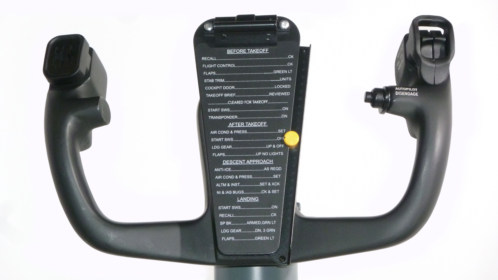
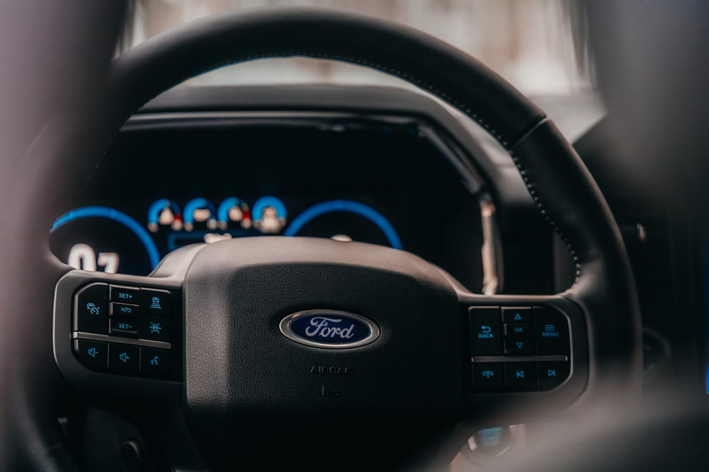

No, Grandma Shouldn't Buy A Tesla
Dear fellow millennials, our parents are getting old. And I keep hearing this sentiment over and over: "I worry about my mom/dad's ability to continue driving, so I'm encouraging them to get a Tesla"1.
This is...just a terrible idea.
The reasons are nuanced, and blend human psychology with engineering, design, and society as a whole. Frankly, I think it's fascinating. The history of vehicular safety systems is littered with cases where the technology utterly failed to deliver what it promised. And within this history lie several reasons why some modern safety systems might make us worse drivers.
The Surprisingly Normal Lack of Skill
On August 28, 2009, California Highway Patrol Officer Mark Saylor, his wife, daughter, and brother-in-law were killed in an uncontrolled acceleration crash in a 2009 Lexus ES350 in San Diego. Unlike many previous incidents, this crash was captured on a tragic 911 call made by Mrs. Saylor from the speeding car before it crashed and killed all four occupants. This case became national news overnight.
In 2001 Toyota had introduced electronic throttle control (ETC), which removes any mechanical linkage between the pedal and the throttle body itself. From 2002 to 2009, many defect petitions were made to the NHTSA regarding unintended acceleration in Toyota and Lexus cars. The first major cause of these issues was discovered in 2007: floor mats. Apparently the lack of room between the floor and the bottom range of accelerator pedal travel could, in some Lexus models, result in the accelerator pedal becoming stuck to the floor. Despite discovering this, Toyota failed to redesign this in a timely manner 2. In the meantime, several more sudden unintended acceleration (SUA) events occurred.
The complaints continued to flood in, and in the minds of the public, the drivers and floor mats were not to blame: it was the newfangled ETC system. It was (and in some cases still is) the opinion of many that a fault in the ETC could cause the car to accelerate out of control, and this was the cause of these crashes. In 2011, NASA and the NHTSA published a report stating unequivocally that floor mats and pedal misapplication were to blame for the overwhelming majority of SUAs.
The report notes that the vast majority of complaints involved incidents originating from a stationary position or very low speed, with allegations of very wide throttle openings and ineffective brakes. Where the complaint included allegations that brakes were ineffective or that the incident began with a brake application, the most likely cause was pedal misapplication. The driver's sincerely held belief that they pressed the brake is not evidence that they did. (Section 2.2.5) And boy did all of the survivors believe that they had held the brake pedal.
The 2010 field inspections examined 58 alleged UA crashes including event data recorder data, and in nearly every low-speed incident where evidence was obtained, the data showed the accelerator was being applied with either no braking at all or braking only in the final second. One exception involved floor mat entrapment. (Section 2.5.4)
In addition, NASA examined the Toyota ETC software in detail, specifically looking at the Vehicle Pedal Accelerator signal processing, the diagnostic routines, and the failsafe logic, including subjecting the entire system to multiple faults, injecting resistive shorts into the pedal encoder, and blasting the entire system with EMI at levels significantly above certification standards to see if that could re-create the behavior.
And they simply could not. Not once, despite their best efforts, did the system behave the way drivers swore it had.
Despite this, much of the public still refused to believe that the cause of these events was not related to software. Many of the lawsuits alleged that bad safety culture, antiquated electronics, and bad software design were the likely cause of these SUA incidents, long after the NASA report was published.
With the benefit of hindsight and statistical data, it's easy to see that this was not a Toyota problem. While their rates of SUA complaints were the highest, this was likely inflated by the high-profile negative press and various recalls that many owners were aware of:
Complaint rates by manufacturer (2008 model year)3:
| Manufacturer | Risk (1 in N vehicles) |
|---|---|
| Toyota / Lexus | 1 in 50,000 |
| Ford | 1 in 65,000 |
| Volvo | 1 in 50,000 |
There are so many other human factors elements of this study that I'd love to talk about. Seriously, if you like this kind of stuff, give it a read. But for the context of the idea I'm about to present, the important point is: under the right circumstances and despite decades of experience, many drivers can confuse the gas and brake pedal.
This sounds absurd, but it is one clear signal of a deeper problem: Driving, for most people, is the most dangerous thing they do regularly. And most of them are not very good at it, not in the ways that actually matter.
The ordinary commute is something most drivers handle adequately. But most vehicles are absurdly reliable, and the absence of genuine emergencies creates a false sense of competency. The skills that actually determine whether you survive a dangerous situation are precisely the ones you've never had to use.
How does your car behave when a tire blows at 75 mph? What are your steering inputs going to look like? Are you going to panic brake?
What about ice? The average driver in the southwest sees icy roads at most once or twice a year. They are not going to be well-practiced when it happens.
And when did you last practice a full emergency stop? For light vehicles under 7,716 lbs, stopping within the prescribed distance may require up to 112 lbs of pedal force applied within 0.3 seconds. 4 Research conducted by Mercedes-Benz in 1992 found that when faced with an emergency braking scenario, a large percentage of drivers failed to apply the correct amount of force.5
These are the circumstances under which people confuse the gas and brake pedal. Not in calm traffic, but in a sudden high-stress moment that demands a practiced physical response most drivers have never developed.
Marketing material for modern vehicle safety systems will tell you that this is the exact problem they solve. But in truth, they do very little to address it, and they oftentimes make it worse.
Mode Confusion
Recently, a 76-year-old woman was killed when a Tesla driven by a 44-year-old man flew into her daughter's home after abruptly accelerating to near highway speeds on a residential street.
What followed was rather predictable. The driver (who survived) reported that autopilot was engaged. Tesla then supposedly pulled data indicating that the accelerator pedal was fully depressed at the time of the collision (according to a post by Elon Musk on the website formerly known as Twitter). And in the ensuing Twitter flame war, both sides accused the other of being dishonest.
I suspect - and you might too after reading the previous section - that pedal confusion was likely the primary driver of this accident (though the exact cause remains unresolved). But, assuming the self-driving system was engaged before the accident, why was the driver standing on the accelerator (thinking he was standing on the brake pedal) in the first place?
A probable contributing factor was mode confusion: a failure where the operator no longer has an accurate mental model of what state the automation is in, or what it will and won't do in that mode.
Aviation researchers have been documenting this since the introduction of glass cockpit aircraft in the 1980s. Earl Wiener, studying advanced automation in commercial transport for NASA, described the phenomenon of automation that solves one set of problems while quietly creating new ones.6
Nadine Sarter and David Woods spent much of the 1990s studying how pilots actually interact with Flight Management Systems and found that even experienced crews frequently didn't have an accurate model of what mode the FMS was in, or why it had switched. They called the result "automation surprise": the aircraft doing something that the pilot didn't expect and couldn't immediately explain.7
On the night of June 1, 2009, Air France Flight 447 stalled into the Atlantic Ocean and killed all 228 people aboard. When the pitot tubes iced over and the autopilot disconnected, the aircraft transitioned into a reversionary control law that lacked the stall protections the crew had expected to be there.8 Operating under extreme cognitive load, in the middle of the night, over open ocean, the pilot flying pulled back on the sidestick - exacerbating the stall. Had he understood the logic of the reversionary control law, perhaps he wouldn't have.
And mind you, this isn't some random guy rocking up to his local Airbus dealership and test driving an A330 without even reading the owner's manual. These were experienced pilots with thousands of hours of experience in type between them. These pilots were intimately familiar with the systems and operation of the A330, and they got confused about the behavior of its automation anyways.
Mode confusion has been cited in several accidents, most notably in a fatal Tesla accident report that occurred on May 7, 2016, in Florida9. In many cases, the NHTSA found that drivers remained confused about the systems even after reading the manual, and then went on to note that a large percentage of drivers fail to read the manual anyways.
In the last five years, I've extensively driven four different vehicles from three different manufacturers that have ADAS systems, and I've had moments where - even using them in the manufacturer-approved, manual-compliant way - I've been completely caught off guard by them doing something unexpected. In some cases, the reason is obvious to me after the fact. And some are unexplained to this day. But in all cases, the fix is to disengage the system and resume driving normally.
And, I'm sorry, but you will have to indulge me in a short rant: the actual UX design for disengaging the ADAS systems in every single one of these vehicles is an absolute farce.
Let me give you an example: here is the yoke from a 737. Take a guess which button disables the autopilot:

If you said the big button clearly labeled "Autopilot Disengage", you would be absolutely correct.
Now, for comparison, here is the steering wheel from a somewhat modern Ford truck equipped with the BlueCruise ADAS suite:

Which button do you think completely disables the ADAS suite?
Well, guess what: no matter which one you picked, you are wrong. You have to press two different buttons to completely disable ADAS in this vehicle. One to disable adaptive cruise control, and another to disable automated lane keeping. I cannot express how stupid I think this is.
In case any automotive engineers are reading this: Please, for the love of god, get together with your industry peers and decide on a standard button iconography and color for a "disable all ADAS features" button10, and make sure every single car produced from now on has this standardized button. The best fix for mode confusion is to revert the entire system to a known state. Usually the state where the driver is driving the car, and the computer isn't.
I suspect that in this accident (and probably many others) the driver was confused. Either confused about what the system was doing in the moment, or confused about the capabilities of the system in general. And when faced with an uncertain situation, he tried to do the right thing: slam on the brakes. He just missed.
The pilots on the aforementioned Air France flight were fighting to stay ahead of their automation systems. And they were trained, experienced, and trying their hardest to save that plane. They still lost track of the behavior of the system. The hypothetical elderly driver we started with is likely interested in buying a car with ADAS because they don't want to stay engaged.
That is a big part of the marketing pitch for these systems, and it is the exact wrong posture. To make things worse, when things go wrong in an aircraft you probably have minutes of altitude to work with before you are truly, unrecoverably screwed. In a car, traveling at highway speeds, you are lucky to have seconds.
Mode confusion is a real hazard, especially for someone who has spent a lifetime at the wheel of a low-tech vehicle. But it may not even be the worst of it. Let's talk about why the safety systems often behave exactly as designed, and yet still don't make people any safer.
Dagen H
By the mid-1960s, Sweden had a traffic problem.
In truth, it was mostly a geometry problem. Swedes drove on the left, but more than 90% of them did it in left-hand-drive cars. Mostly American imports (and, absurdly, domestically produced Volvos and SAABs). That put the driver on the curb side of a narrow two-lane road, blind to whatever was coming when they pulled out to pass.
Meanwhile, every country Sweden shared a land border with drove on the right, and roughly five million vehicles crossed those borders a year. The car population had gone from 500,000 to 1.5 million, and was forecast to hit closer to 3 million by 1975.
The Swedish public was not interested in fixing this problem. A non-binding referendum put forth regarding a switch to right-hand driving on 16 October 1955 was met with an emphatic populace: 82.9% against.11 The static objections were predictable, mostly money-related, but underneath it all was the ordinary human preference for familiarity.
The Riksdag did it anyway. On 10 May 1963, Parliament approved Tage Erlander's proposal to switch, and set the date four years out: 3 September 1967. A state commission, the Statens Högertrafikkommission, was stood up to run the changeover, and it began a four-year public education program designed with input from psychologists. Around 350,000 road signs had to be replaced, 20,000 in Stockholm alone. The campaign put the H logo on milk cartons and on underwear. Swedish television ran a songwriting contest; the winner was "Håll dig till höger, Svensson" (Stay to the right, Svensson).
By the time the date arrived, the world's press had assembled to watch Sweden implode. Peter Kronborg, who was 10 years old that day and later wrote a book about it, remembers the foreign correspondents clearly: they were waiting for a bloodbath.
And so too was the state of Sweden. Soldiers, police, crossing guards, and volunteers in huge numbers were deployed. Non-essential vehicles were banned from the road starting at 1:00AM that morning. Even the elk hunting season was rescheduled.
Then, at 4:50AM on 3 September 1967, all vehicles on the road came to a complete stop. They then carefully proceeded to the other side of the road. Driving resumed after a radio countdown ending at 5:00AM.
Nobody died. The day produced 157 minor accidents, 32 of them involving injury. The following Monday - the first normal working day, with regular commutes resumed - Sweden logged 125 reported traffic accidents against a typical range of 130 to 198. And none were fatal. Motor insurance claim rates had fallen significantly.12
This drop was the exact opposite of what the experts running the campaign were expecting. The general press reaction was something closer to deflation than awe. Everyone was expecting a bloodbath and got one of the safest periods of motor vehicle operation of that era.
Unfortunately, six weeks later, everything was back to normal.
The Theory of Risk Homeostasis
Gerald Wilde's Risk Homeostasis theory, laid out formally in 1982,13 makes a very unintuitive claim: people don't try to minimize risk. Instead, there is a certain level of risk that we all individually have an inherent preference for. This personal level of risk (set by what we gain from taking the risk, and what we lose from getting it wrong) is something that all of us steer towards.
What we can adjust is not real literal risk, but rather our perception of risk. So the mechanism is a feedback loop. When the road feels more dangerous than we're willing to accept, we slow down, look harder, and leave more distance; when it feels safer than our tolerance, we "spend" the surplus risk tolerance on speed, convenience, getting there sooner, and distractions.
Wilde's conclusion follows directly from there. The accident rate depends on only one factor - the target risk level of the population. According to his theory, this acts as the reference variable in a homeostatic process. Make the car safer and the driver will trade it for something else.
Dagen H is the theory's showcase example, and the story it tells is tidy. The switch (and media circus surrounding it) produced a sudden surge in perceived risk, well above the level Swedes were prepared to tolerate. As a result they drove more cautiously. Until, through their own experience and through the press, they discovered the roads were less dangerous than they'd assumed, relaxed accordingly, and the crash rate returned to its original baseline. Iceland's changeover the following year showed a similar short-lived effect.
It is worth being clear that this theory is contested; it is far from a settled finding. Leonard Evans argued in 1986 that the traffic data itself rejects it outright; Wilde replied that Evans's seven cases don't support so boldly worded a conclusion, which gives you the flavor of the exchange. In a 2002 BMJ debate, Robertson and Pless argued that the supporting evidence is deeply flawed and the theory is little better than an excuse for doing nothing. That last part is the real stake, since a strong reading of homeostasis implies that the invention and implementation of safety systems such as airbags, seatbelts, and automatic braking systems are entirely futile.
Their sharper methodological point is that behavioral compensation appears to be occasional and contingent on a perceived change in risk: drivers can only compensate for what they notice, which is why a nation reversing its roads overnight produces a large effect and crumple zones and improved crash ratings the driver never considers produce little or none. That distinction, between the strong claim that risk is conserved and the weaker one that people partially offset changes they can feel, is where most of the actual disagreement lives. For the purposes of this post, I'm going to assume that you agree with me that the truth is probably somewhere in the middle.
The weaker claim - that compensation is real but partial, limited to risk people can actually perceive - is probably the more useful one for thinking about ADAS anyways. General aviation gives us a few more examples of this mechanism in action.
There is a counterintuitive pattern in light aircraft safety: some of the safest aircraft in terms of fatal accidents per flight hour tend to be flight school trainers. Old, well-worn Cessna 172s and Piper Cherokees, aircraft that lack virtually every modern safety system. No stability augmentation, no seatbelt airbags, no ballistic parachutes. Just the pilot, whatever skill they've managed to develop, and often an instructor in the right seat. The absence of a safety net seems to produce the kind of attentiveness that the safety net itself can often crowd out.
The same mechanism is operating in your car right now, and has been for years. Anti-lock braking systems became standard equipment on new vehicles well before they were federally mandated in 2013.14 The physics are genuinely better: ABS prevents wheel lockup, maintains steering during hard braking, and reduces stopping distances on most surfaces. By every intuition, this should have produced a meaningful reduction in rear-end collisions.
A study of taxi drivers in Munich found that drivers in ABS-equipped vehicles followed more closely and braked later than their counterparts in non-ABS cars.15 The accident rates between the two groups were similar. The improved braking capability had been spent, without any conscious decision, on tighter following distances and later brake applications. The safety margin hadn't accumulated. It had been converted, automatically, into a slightly more aggressive driving style.
And drivers were genuinely not aware of this. The compensation just happened, across an entire generation of vehicles, and the expected safety dividend largely failed to materialize. The same pattern seems to play out wherever safety systems appear.
The Cirrus SR22 arrived in 2001 as something genuinely different in the general aviation market. Most established manufacturers were building around designs that dated back decades, iterating carefully within the constraints of existing certification bases and tooling. Cirrus had no such legacy to work around. Starting from a clean sheet with composite construction and modern avionics integration, they built those safety features into the architecture from the beginning. The SR22 came standard with a full glass cockpit at a time when steam gauges were still the norm. TKS fluid de-ice was available for flight into known icing conditions. The cabin was wide and comfortable, visibility was excellent, and the aircraft was certified under a newer Part 23 amendment with structural margins and crashworthiness standards that legacy designs, however well-regarded, couldn't match.
And then there was CAPS. The Cirrus Airframe Parachute System is a handle in the cockpit that deploys a rocket-propelled parachute large enough to safely lower the entire aircraft to the ground.
While ballistic parachutes had appeared on ultralight and aerobatic aircraft before, CAPS was the first system integrated into a certified IFR cross-country airplane. The industry took it seriously. The expectation was that an aircraft built around safety from the ground up, with a literal last resort available to any pilot, would perform substantially better than the rest of the fleet.
It didn't.
For years the SR22's fatal accident rate ran roughly in line with other aircraft in its class.16 Aviation Consumer called it "just average."17 The accident data suggested why: Cirrus pilots were flying into conditions their peers in other aircraft typically avoided. Weather, night, marginal VFR. The parachute hadn't made them safer. It expanded what they were willing to attempt.
And, to some extent, I understand that logic. I fly VFR without a ballistic parachute, and I'm comfortable with that tradeoff. But my ambition is to eventually fly IFR, and for that, I want one. Not because it would make me any safer in a net sense. I want it because, I feel, it buys me the right to be in low-ceiling IMC in a single-engine airplane at all.
That's a much narrower trade than flying into icing, thunderstorm cells, or skipping a preflight. Those are the kinds of decisions that actually put SR22s in the ground. But it's the same underlying mechanism. I'd be deliberately spending a safety margin on risk I wouldn't otherwise accept.
So many SR22 pilots treated that safety margin as license to accept more risk that Cirrus eventually had to address it directly. Not by improving the actual safety systems, but by building a structured training pattern around the behavioral patterns observed in the accident record. The result was a meaningful improvement in the SR22's safety record.18
That is the middle ground: safety technology isn't futile, it just can't carry the load alone. The mechanism that interrupts risk homeostasis isn't a better machine: it is a better-prepared person operating it, who understands both what the system can do and, more importantly, what it can't.
Conclusion
It is worth being clear about what this argument is and isn't. ADAS, for the most part, is well designed and does what it claims. For an attentive driver who understands what the system can and cannot do, these features do improve safety. Under the conditions for which they were designed, they catch fatigue-induced drift, maintain following distances with a robotic consistency even the best drivers lack, and - when they successfully detect danger - brake faster than humans can react, getting close to the limit of traction within a fraction of a second. They can allow an attentive driver to drive farther for longer without sacrificing safety.
The problem, at its core, is that there is a massive gap between what the technology is actually capable of, and what people believe it is capable of. "Autopilot." "Full Self-Driving." These names do not describe an Advanced Driver Assistance System that requires continuous attention and is not designed for city streets19. They describe a fully autonomous car. Reading the NHTSA reports, I get the impression that people's understanding of the capabilities of their vehicles is far more influenced by the way systems are named and marketed, and barely at all by how the user manual describes them. And this makes sense, because by the NHTSA's own admission, few ever read the manual in the first place. For whatever the theory is worth, Risk Homeostasis is calibrated to perceived risk. And a lot of people are living in a marketing fantasy land.
True full autonomy - the kind where the vehicle has no steering wheel or pedals for humans in the first place - is probably where we are headed. And it is entirely possible that fully autonomous vehicles are far, far safer than the average driver. But that reality where you can go buy a full self-driving vehicle is not here yet, despite what Tesla's marketing department would like you to believe. What we have right now is a fast-changing landscape of transitional technologies: capable enough to change your perception of risk, but not capable enough to remove your responsibility. The car will manage the lane change and following distance with perfection. Right up until it can't. And when it can't, it will hand control back to you in whatever state you happen to be in and expect you to handle what it couldn't.
This is just as true of aircraft, but for aircraft, we have training. We have operating handbooks that most pilots actually read and study. We have flight reviews, ratings, checkrides, and a safety culture that permeates everything from flight schools to flying clubs. There is no equivalent of this for ADAS. No training requirement, no proficiency program, no demonstrated understanding of the system's limitations before you can press the button to engage it (and good luck remembering how to disengage it). The technology is considerably more complex than a parachute handle or autopilot level button, and considerably more visible in its operation. Which means the behavioral compensation it induces is just as real, but the actual benefit it provides is smaller by comparison.
This isn't to say safety engineering is hopeless. Driving is meaningfully safer than it was thirty years ago: fatality rates per 100 million vehicle miles traveled fell from 1.73 in 1994 to 1.19 in 2024.20 But the gains that actually stuck came from seatbelts, airbags, crumple zones, median barriers, and better road design: systems that work without asking for your cooperation, that you cannot perceive and therefore cannot offset. The moment a safety system becomes visible enough to change how you feel about risk, you have introduced the compensating mechanism. ADAS is nothing if not visible.
The argument for buying an aging driver a car with active safety systems assumes that their deficits are something the car can compensate for. It's the same rationalization as the person buying an ADAS-equipped car so they can send text messages on the highway. Regardless, there is very little data that suggests this is true of the current technology.
The safest car for Grandma is the one she is already driving.
1: Or similarly automated vehicle
Bloomberg analysis of NHTSA data; Consumer Reports analysis of 2008 MY NHTSA complaints; NHTSA/NASA Technical Report (2011)
On most vehicles, depressing the brake also usually disables the ADAS systems. But in many cases, only temporarily. And mixing the primary ADAS disablement mechanism with the most important control axis in a car is flawed at best. There are many legitimate scenarios where you need to disable ADAS, but accidental heavy braking would exacerbate the loss of control.
Federal Motor Vehicle Safety Standards; Electronic Stability Control Systems (ESC, which requires ABS hardware, was phased in for all light vehicles from 2008 through September 2011)
Ironically, aircraft autopilots do require continuous attention and monitoring, but that isn't what the general public tends to believe.